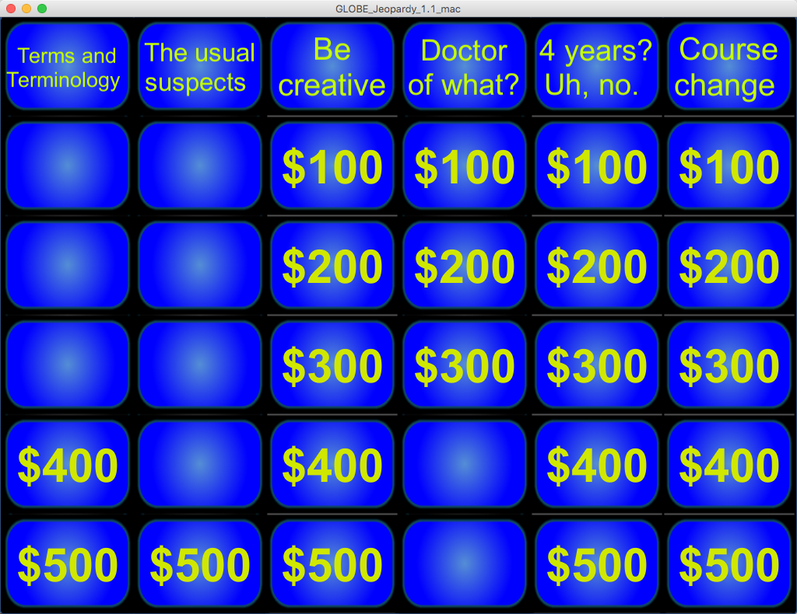
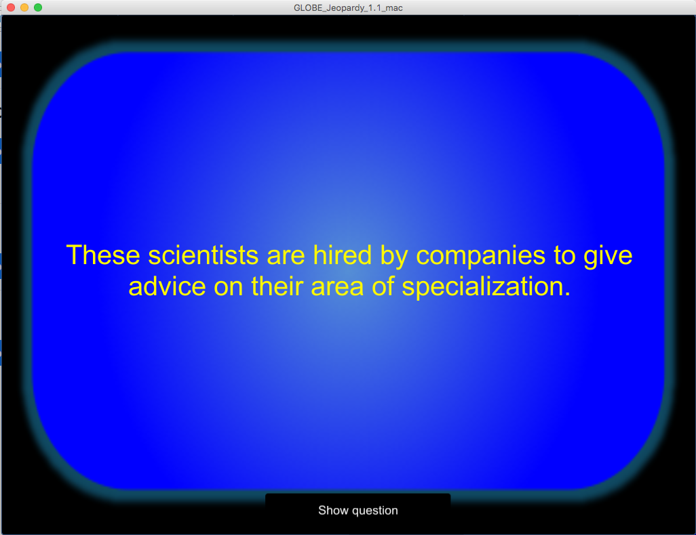

AutoWRFChem (Base)
A package written in a combination of Python and Bash that automates the
configuration, compilation, input preparation, and execution of the
WRF-Chem chemical transport model.
Features include:
- Necessary environmental variables are sources automatically from a configuration file, meaning you no longer need to remember to set them or place them in a .bashrc file.
- WRF and all the necessary input utilities (WPS, NEI emissions, MEGAN, MOZBC) can be compiled with a single command.
- All the necessary inputs can be prepared with a single command.
- During execution, the most recent restart file can be automatically identified and the model set to start from that file.
Matlab-Python Interface
A collection of Matlab functions that convert Matlab types in Python types
and vice versa. This provides flexibility in converting Matlab arrays,
cell arrays, and structures into corresponding Python types.
Bibliography Builder
A Python package that can assemble a .bib file from a directory of PDF files.
It will attempt, for each PDF, to find the DOI number and retrieve the bibliographic
entry. It also has a mechanism to update that .bib file if new PDFs are
added without overwriting previous entries. A secondary function of this
package is to convert .bib files to HTML representations; which is used to
update the Publications page on this website.
Parallelizer
A small C++ program that can launch parallel iterations of a program using
MPI parallelization.
GLOBE Jeopardy
A customizable Jeopardy-like game that I built for a GLOBE (Global Learning and Observation to Benefit the Environment) outreach event. It comes with two sets of trivia, and you can add your own.



 https://orcid.org/0000-0002-8599-4555
https://orcid.org/0000-0002-8599-4555